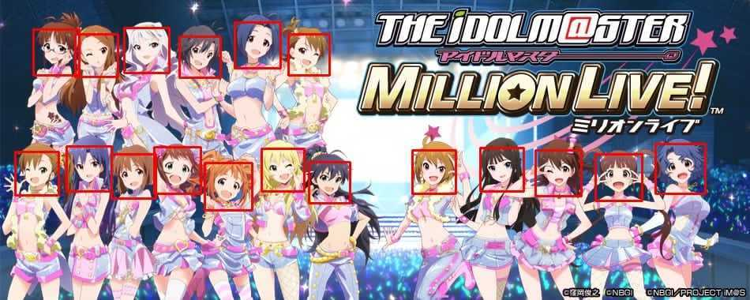

在动漫中大GAN一场吧！
GAN的一大应用场景就是逼真图片的生成，而这一点则与动漫二次元期望生成“老婆”的愿望一拍即合。于是近年，有许多动漫相关的、使用GAN的项目被开发了出来，作为一个资深动漫宅，这里给大家做了一个整理，欢迎补充~
实例
- 输入各种参数生成动漫人物头像
- Waifu2x 动漫图片无损放大
- Chainer-CycleGAN 动漫人物头发转银色
- Turn your 2-D wife(anime image) to 3-D wife(cosplay image) or opposite using DCGAN!
工具
- 自动化动漫人物打标签
- 自动化动漫人物脸部切割保存

- animeGAN A simple PyTorch Implementation of GAN, focusing on anime face drawing.
- GANotebooks 各种GAN的Jupyter Notebook教程
- AdversarialNetsPapers 各种GAN的Papers
引用
- GAN学习指南：从原理入门到制作生成Demo
- GAN — What is Generative Adversary Networks GAN?
- 可能是近期最好玩的深度学习模型：CycleGAN的原理与实验详解
- 输入各种参数生成动漫人物头像官方博客
- 宅男的福音：用GAN自动生成二次元萌妹子
- Chainerを使ってコンピュータにイラストを描かせる
- 旋转吧！换装少女：一种可生成高分辨率全身动画的GAN
- 不要怂，就是GAN
- GAN — Some cool applications of GANs
- 眼见已不为实，迄今最真实的GAN：Progressive Growing of GANs
- 通俗理解生成对抗网络GAN
- 从头开始GAN
- Cycle GAN 作者官网
- 如何从零开始构建深度学习项目？这里有一份详细的教程
- 带你理解CycleGAN，并用TensorFlow轻松实现